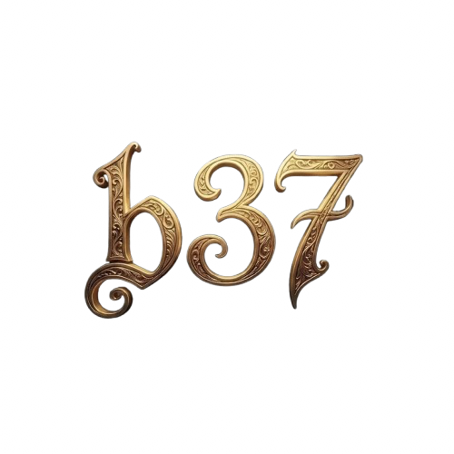
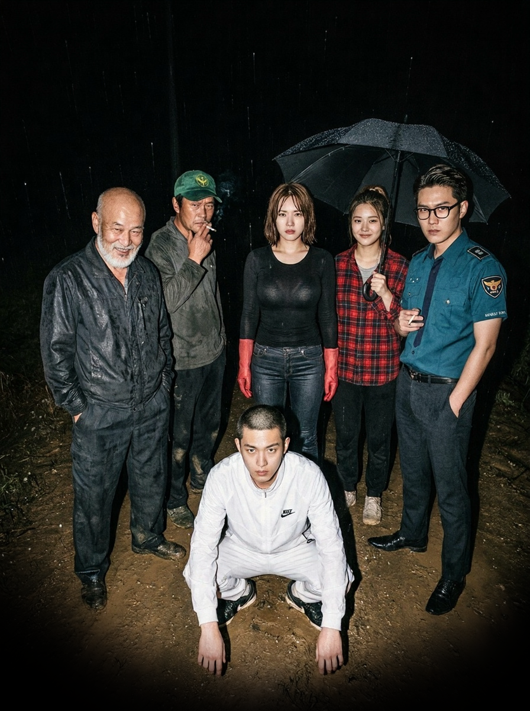

당신의 마음 가장 깊은 곳, 지하 37층
어둠 속에서 마주하는 진정한 자아
당신의 마음 가장 깊은 곳, 지하 37층
탐구할 에피소드를 선택하세요
당신의 마음 가장 깊은 곳, 지하 37층
납치범을 피해 가까스로 내려온 낯선 마을.
도와달라는 나의 외침에 마을 사람들이 하나 둘 나타난다.
한 명을 제외한 이들 모두 납치범과 가까운 관계라는 예감이 든다.
오직 내가 믿을 수 있는 단 한 사람은?

1
2
3
4
5
6
해석
조언
당신의 마음 가장 깊은 곳, 지하 37층
끝없는 추격전, 발이 푹푹 빠지는 진흙탕을 지나
드디어 인적이 드문 외딴 숲속 공터에 도착했다.
당신의 눈앞에는 전혀 다른 형태의 세 채의 집이 있다.
당장 숨어들어가 도움을 요청할 집은 어디인가?

1
2
3
해석
조언
당신의 마음 가장 깊은 곳, 지하 37층
결정적 단서를 쥐고 있는 기묘한 분위기의 여성.
그녀는 당신에게 위험한 거래를 제안한다.
대화를 나누던 중, 그녀의 몸에 새겨진 문신 중
당신의 눈길을 가장 먼저 끈 것은?

1
2
3
4
해석
조언